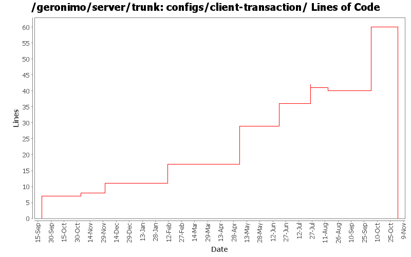

[root]/configs/client-transaction
 src
(0 files, 0 lines)
src
(0 files, 0 lines)
 main
(0 files, 0 lines)
main
(0 files, 0 lines)
 plan
(0 files, 0 lines)
plan
(0 files, 0 lines)
 plan
(0 files, 0 lines)
plan
(0 files, 0 lines)
 site
(0 files, 0 lines)
site
(0 files, 0 lines)

| Author | Changes | Lines of Code | Lines per Change |
|---|---|---|---|
| Totals | 21 (100.0%) | 92 (100.0%) | 4.3 |
| djencks | 10 (47.6%) | 63 (68.5%) | 6.3 |
| jdillon | 2 (9.5%) | 17 (18.5%) | 8.5 |
| jlaskowski | 1 (4.8%) | 6 (6.5%) | 6.0 |
| kevan | 1 (4.8%) | 3 (3.3%) | 3.0 |
| prasad | 4 (19.0%) | 1 (1.1%) | 0.2 |
| hogstrom | 1 (4.8%) | 1 (1.1%) | 1.0 |
| dain | 1 (4.8%) | 1 (1.1%) | 1.0 |
| dwoods | 1 (4.8%) | 0 (0.0%) | 0.0 |
GERONIMO-3565. Configs distributed amongst framework/configs and plugins
0 lines of code changed in 3 files:
GERONIMO-3496 assemble servers out of plugins
20 lines of code changed in 1 file:
GERONIMO-3409 Several geronimo-web.xml files still use a 2.0-SNAPSHOT depend. One testsuite file has a hard-coded depend on a 2.0 module. Need to upgrade to geronimo.components vers=2.0.1, which is hard-coded to 2.0 in configs\client-transaction\pom.xml
0 lines of code changed in 1 file:
* updated copyright date to 2007
1 lines of code changed in 1 file:
GERONIMO-3344 move the versions for new components jars into root pom dependency management
0 lines of code changed in 1 file:
GERONIMO-3344 use functional jars for tx and connector, g server code just wraps in gbeans. This commit has versions for new jars in the wrong place, I will fix this shortly
10 lines of code changed in 1 file:
Changed trunk to 2.1-SNAPSHOT
1 lines of code changed in 1 file:
GERONIMO-3272 eliminate the geronimo-transaction-jta11 module, we are entirely on jta11 now. Also refix logging error for non-NamedXAResource. Also make jpa stuff use spec interfaces and not drag ejb spec into the tm
1 lines of code changed in 1 file:
GERONIMO-3083 fix j2ca container managed security
7 lines of code changed in 1 file:
GERONIMO-3136 Supply persistence framework classes in app client and hook up appropriate deployers.
12 lines of code changed in 1 file:
Normalize all configs/*/pom.xml headers
14 lines of code changed in 1 file:
GERONIMO-2454 upgrade xerces/xalan etc, also GERONIMO-2600 fix derby problems, fix persistence unit and ref builder problems in app client
6 lines of code changed in 1 file:
GERONIMO-2537 Merge from branches/1.2 onto trunk. I have not reviewed trunk license info. So, it's possible that there are already some deltas which should be reflected in license/notice files. This change updates the general LICENSE.txt and NOTICE.txt files. Note that I've expanded the notice/license files in the root of a source distribution. Also added required copyright to NOTICE.txt files. Note that minimal distributions have an overly broad license/notice files. Also, we have multiple copies of the same general license/notice files. Would be good to reduce these.
3 lines of code changed in 1 file:
Changed version to 2.0-SNAPSHOT
1 lines of code changed in 1 file:
GERONIMO-2537 All Geronimo source files must be brought in line with the new ASF source header and copyright notice policy
The rest of Geronimo sources migrated
6 lines of code changed in 1 file:
Using ${version} instead of ${pom.version} in a feeble attempt to get around ${pom.version} changing to its timestamp version for SNAPSHOT artifacts
3 lines of code changed in 1 file:
GERONIMO-2398 Create transaction and connector-deployer configs, clean up a lot of dependency problems, and fix major app client module builder classloader bugs
7 lines of code changed in 3 files: